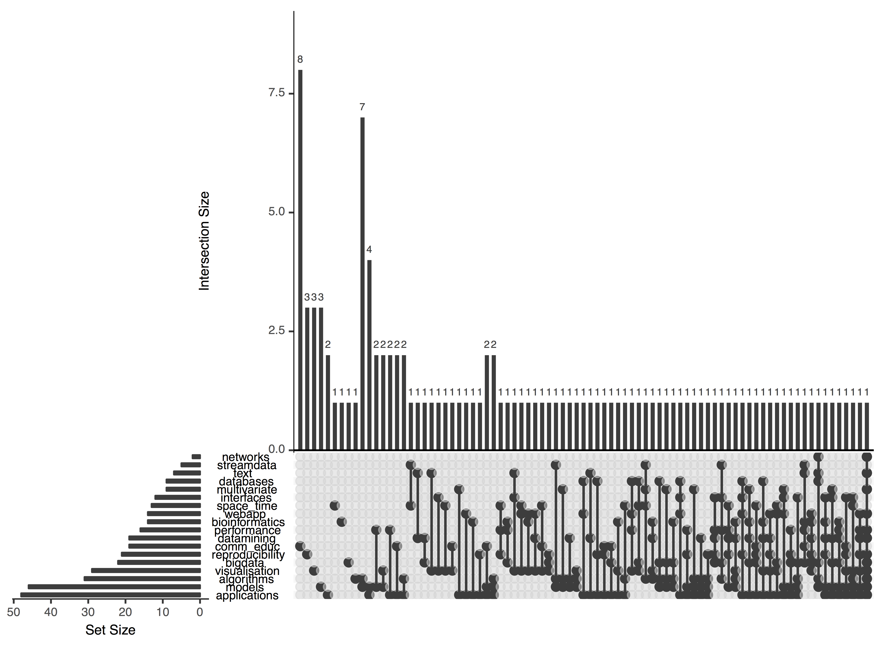

The background to useR! 2018
useR! 2018 was held for the first time in the southern hemisphere, and the feedback from participants has been very positive. I have been asked to write about the organisation and this is a good way to get some of the planning and decisions and operations into print, so that it might be useful for others charged with conference organisation. There are a lot of people who made the conference a success, and their contributions need to be acknowledged. A philosophy underlying the planning was to have some fun, use open source tools, and experiment a little, creatively.
Location
A twitter poll was conducted prior to submitting a proposal to host useR! 2018. Choices were Cairns, Brisbane, Sydney or Perth. Brisbane was the overall favorite, a balance between reasonable weather, and reasonable travel.
Nick Tierney (with some help from Jessie Roberts and Miles McBain) scoped out the Brisbane Convention and Exhibition Centre (BCEC). Their marketing team jumped on board immediately, providing us with a glossy brochure with information on facilities, travel, accommodation, tourism, prices and even negotiated a grant from Brisbane City to help our finances.
Since the last two conferences, at Palo Alto and Brussels, had closer to 1000 attendees, a main concern about the location was size. The Brisbane convention centre auditorium can hold 620 people. We estimated that this might be ok. We gambled that it would be unlikely to manage to get these numbers, all the way to Australia. but we had a backup option of doing a live feed of keynotes into a second conference room. Fortunately, everyone fit, and filled the auditorium.
General organisation
We created a slack group for communication about planning for the conference. By the end of the meeting there were 18 channels, basically sub-committees for different purposes. Initially I asked a few people to help, particularly with the development of the proposal. Once, it was announced that it would be held in Australia, I had a lot of people who volunteered to help with the conference organisation. This was absolutely spectacular! It is a tribute to the R community that people are so generous with their time. For the most part if someone contacted me wanting to help, I included them, until it came to a time when the number was getting a bit unwieldy. We needed to make sure that as tasks needed to be done, committee members would actually realise that despite the large number of helpers, that someone needed to step into and take the lead on crucial jobs. Maintaining a diverse organising committee was also of primary importance. A diverse committee helps to ensure that the conference will be a welcoming environment to all R users.
Most communication about the organisation was done through slack. I really like it. There is a bit of a problem sometimes that messages don’t necessarily get to people unless the person is tagged, and it generally requires that members check in to see communications. If a person is tagged, and they don’t respond slack will send an email. I like it because it helps with transparency, there is a log of communications in one place, and because members can choose when to check in, it’s not intrusive.
Logo development
Kangaroo and sun are iconic Australian images, and right from the start it was clear that these needed to form the core. We wanted to use a female kangaroo with a joey popping up form the pouch, because the baby in the pouch is the really cute aspect of many Australian animals. I experimented using an image available on the web, but it was not creative commons. The only creative commons images were of male kangaroos. So I searched my own photo collection, without success. Lots of kangaroos with joeys but the joey’s head was flush with the body which doesn’t work in silhouette. My sister has a much larger photo collection from all her plant and insect collecting trips to the wild remote parts of the country. She is also good at drawing, so she spent several hours making initial sketches, based on merging several photos. The final version was one of these that I modified some more. Göknur Giner cleaned up the edges and colours using Adobe Illustrator one weekend.
This was supposed to be a base image, and then we would add location and date using an R code like was done by the Aalborg team for useR! 2015. The image would just be the icon. In all the hectic months leading up to the conference, particularly in semester 2 2017 (Aug-Nov), when some of the critical planning work needed to be done, I was teaching two classes, one for the second time and the other a new class, totalling 300 students. I only remembered again after the conference finished that I’d forgotten.
Website
A goal was to do as much as possible of the conference tools and facilities entirely with R. We made a github account. The web site was made using the blogdown package, with materials kept on github, and deployed using netlify. These are fairly new tools, that many people are adopting because it is easy to create elegant web sites, and maintain a blog. Earo Wang led the team on the web site, creating the initial design, writing new css, and javascript for some special needs, making the hex sticker background image. She also automated the pulling abstract information out of google sheets, and converting directly into html format for display on the website. Her infrastructure made it easy for me to make many little modifications.
Keynotes
We solicited input on keynotes using an online survey just after the previous useR! 2017, also requesting suggestions for the conference (the primary one was to be sure to have a conference t-shirt!). There were many more men’s names provided to be keynotes, so Rob Hyndman and I sat together and brainstormed a more diverse set of names. In mind was a comment on the foRwards chat by Alicia Oshlack from several years ago that there was no excuse not to have a 50:50 gender ratio. That was the goal, and we chose to have 6 keynotes to achieve this. There are women in the R community who have done and are making exceptional contributions. It’s really not hard to find them. Along with gender, it was important to balance geographic location (local, USA, Europe) and age, a mix of relatively junior and senior researchers. Another criteria was evidence of ability to give engaging and thought-provoking presentations, so we checked for online videos of the potential speakers, and refined the list based on the quality of these recorded talks.
Rob Hyndman took the lead on inviting speakers.
A hiccup happened two weeks before useR! 2018, when Heike Hofmann had to pull out because of visa issues. We were especially lucky to be able to recruit Dani Navarro to step in, thanks to Steph De Silva. Dani made a brilliant contribution to the programme.
Sponsorship
We were very late working on getting sponsors. I was really lucky that once Steph de Silva had agreed to be a keynote speaker, she asked, “So what can I do to help?” Our sponsorship actions were really lagging. Alex Whan and I were working on this but I think we were both a bit green. Working on getting sponsors was one of the areas where I told Steph we needed help. Her first response, was “So, have you got a prospectus?” To which I promptly responded, “What’s that?” Steph and Alex whipped up the most professional-looking brochure with details on levels of sponsorship in terms of funds and opportunities. Alex set up a trello board based on the list of sponsors and contacts from last year’s conference.
Our very first sponsor was Mark Dulhunty from Educational Measurement Solutions, with an inquiry offering to sponsor child care! Yes! Goknur Giner, soon to become a Mum, took the lead on organising child care for the meeting. We had already received information from the BCEC about a nanny service who regularly worked with them. Goknur followed up on this, and got us all sorted with quotes, before her baby came.
Technically, the Monash Business School was our first sponsor. After it was announced that we would be hosting, it dawned on me that there were some serious expenses that we would need to cover pretty early, especially to lock in the facility. I was very lucky that my first conversation with our department manager, and then the events team, provided a huge safety net. They immediately offered $25k of sponsorship (the first platinum sponsor) and assured me that we could cover the early expenses, and overspend as needed.
Alex and Steph worked their way through the trello board of contacts sending emails inviting sponsorship. We linked the brochure to the web site and made a blog post and tweeted. RStudio were the first big sponsor to come to the table, just after the RStudio conference in January. At the time Hadley Wickham ribbed me, “So who made the brochure? It clearly wasn’t you!” Yep, definitely not me, it’s brilliant, isn’t it!
Steph made many follow up skype calls, talking with R Consortium’s lead, John Mertic and Microsoft’s Terry Christiani, and many others over her intermittent bush internet. I remember the conversation with Terry being interrupted at least once. But another thing from that conversation was a warning from Terry that Microsoft is notoriously slow with getting funds transferred. True to this, we have only just received the $25k that was promised, lots of bureaucratic hiccups.
Steph recognises, and this comes across in her conversations with potential sponsors, the benefit that sponsors get from supporting an event like useR! 2018. Being able to convey this, and work with sponsors to get a solution that suits their needs too, like the bag deal with VergeLabs, the extra diversity scholarships from NAB.
It was our events temporary staff member, Jess Gully, who managed the tough work of getting contracts processed.
The sponsors made a big difference for this year’s conference particularly being financially viable, and we hope that they all feel they received the visibility and appreciation they hoped for.
Tutorials
The input survey also asked for suggestions for tutorial topics and potential presenters. This formed a basis for the invited tutorials. We then invited applications. A google form was designed for this, with the goal being to directly download the information into R to do the reviewing.
Earo Wang and Mitch O’Hara-Wild had a brainstorming session, about how nice it would be to have a shiny app to handle tutorial, scholarship and abstract reviewing. Mitch took up the challenge and produced cooee. The github site has three branches with variations on the app for the different purposes. Mitch has promised to write a blog post, or an R Journal article, about this app, and possibly make it available on CRAN.
We had 66 tutorial applications. This may have been because for the first time we offered some travel support for presenters, up to $3000 for international and $1500 for domestic. We asked for some demographic information from applicants. Again there were many more submitted by men. We wanted to have balance of gender, a broad selection of topics to cater to the diverse interests of the R community, quality material, with a hands-on focus so participants actively learned. There were 6 rooms guaranteed to be available (including the auditorium which was not ideal for a hands-on workshop) which allowed 18 tutorials. About 4-5 slots had already been taken for invited presenters – I don’t remember exactly the numbers because invited and accepted presenters were treated equally in the organisation and reimbursement – which meant that a lot of terrific proposals had to be turned down.
Just prior to the meeting we organised helpers for each of the tutorials. This is a good opportunity to learn on the go, particularly students. We had many on the programme committee that stepped into these roles, and where we needed more support, I leaned on our wonderful Monash PhD students to help.
Scholarships
A google form was constructed to collect information for awarding scholarships, details were hashed out between the scholarships team. We had budgeted $10k from the BCEC funding, and then funds from several sponsors supplemented this. The decision was made to spread the funds more widely than deeply, hoping that recipients might be able to find additional funds to help cover the rest. This amounted to $1000 for international and $500 for domestic travel, plus free registration. We had almost 100 applicants! There is clearly a need for funding travel scholarships.
We asked applicants:
- to tell us about themselves, particularly their R and open source or open data activities
- whether they identified as an under-represented minority, socially or geographically
- why they are applying for a scholarship
- why attending useR! 2018 would be helpful for them, and impact the community
- where they would be coming from
The scholarship review team read all of the applications and rated them on the basis of region they would be representing, record of activity in the R community and potential impact on their local community after the meeting. A more complete summary of the procedures can be found here.
In the end we awarded 7 international and 9 domestic scholarships. There was one hiccup, and my recommendation for the future is to keep in touch with awardees to make sure that they are going to come, and for awardees to communicate with the organisers. Two of the successful applicants from Africa registered for useR! 2018 with the free code right after receiving the scholarship, but I learned just before the conference that they had decided that they could not afford it. If we had known much earlier we could have awarded the funds to another applicant, or possibly found additional funds.
Abstracts
Abstracts were submitted through a google form, which allowed our programme committee to the review them through our shiny app cooee. There were more than 200 abstracts submitted. The review team (Anna, Paula, Soroor, Miles, Nick, Thomas, Alex, as well as me) made a massive effort to work through the abstracts. For talks, we had at least two people provide a review, and for posters one was sufficient. A really big thank you to all of the organising committee members who worked really hard in the few weeks before the early registration deadline to get the abstracts reviewed.
Cooee, the shiny app for reviewing abstracts, had several key features:
- Only the title, abstract and keywords were visible to reviewers. An administrator could look at names and demographic details after the reviews were done. Mitch and Earo were adamant that reviews needed to be conducted blind, but the final decisions could take this information into account.
- Abstracts were rated into one of four groups, using Australianisms “bloody ripper”, “beaut”, “okey-dokey”, “sorry”, the equivalent of outstanding, good, ok, not good enough. This made what is a bit of a chore, fun, especially to be able to label an abstract as a “bloody ripper”. (The origin of this term is explained here.) The groups were also colour coded in the app, which helped quickly see the reviewer feedback (green for best, red for reject).
The submission rates by gender were not equal among the three types of submissions: talk, lightning talk, poster. There was a higher fraction of women who submitted posters than the other categories. We encouraged a few of these women, with topics that would lend themselves well to presentations, to switch making a presentation, once their abstracts had been accepted.
Abstracts were kept separate from registration because we felt that people needed to know if their presentation was accepted before registering and making travel plans. We planned to use the email addresses to link the records, and didn’t anticipate the number of people who would use different emails for the two purposes! It was a major nuisance reconciling the two spreadsheets, with the primary difficulty ensuring that presenters on the programme had registered for the conference. We merged the sheets using tidyverse tools, to identify mismatches, and sent emails to these people. Hannah (our Monash events staff member) worked laboriously on this manually in the weeks before the conference. In retrospect, the abstract form, or acceptance email, would ideally have provided a code that needed to be entered when registering, to help keep the two lists coordinated. One of the complications in registration and abstracts was that some government departments do not allow their staff to register for an event in different financial years - so some presenters could not register until after Jul 1st!
Organising the abstracts into sessions is a real challenge! The first approach was to use topic models using tidytext to read and process the title, keywords and abstracts and the package topicmodels to create topics. We learned a bit about topic modeling: you really need a lot more text, and a lot more documents. The approximately 125 talk abstracts with a huge variance in content doesn’t reduce in dimension very well. The final approach was to use the keywords, and the package upsetR to organise the abstract keywords into sets. We primarily needed blocks of four, because all but two sessions had space for four talks, and then 10 sets of three for the two shorter sessions.

From the plot here, you can see that “community/education” was the only keyword used for 8 accepted abstracts, so these formed two natural sessions. “Applications” was used solo in two abstracts, then there were two more abstracts that used “applications” and “algorithms” so these four were grouped together. The motto here is “pay attention to the keywords that you use to tag your work”! In my years as an editor I have seen a huge variability in the attention paid to keywords in papers, some with none, some with a set that have no relationship to the paper, some with 20. A good set of keywords can help place your work in the field quickly.
Nick and I did the lion’s share of the grouping of abstracts, and we pulled in help to make some of the tougher decisions. Earo built the infrastructure to get the abstracts into google docs and then onto the web site and also into the mobile app. Organising the timing of sessions was the next challenge and making up reasonable names to roughly match the keywords of the abstracts was fun. We needed to make sure that a parallel session had as different a range of topics as possible, that two sessions on, for example, “community/education” were not scheduled at the same time.
You would think that there might be some good tools for doing this sort of work available. We found some commercial systems, but it seems no open source. A good opportunity for someone to make a contribution here! It was a good exercise in text analysis from my perspective: I learned a lot, and I think that Nick and Earo did also.
Welcome to country
Australian history is fraught with shameful relationships with the original inhabitants of the country. A Welcome to Country ceremony derives from the traditional way that newcomers to a territory learned of the food, water and resources available in the area and acknowledged the current owners. Jess sought out the services of the wonderful Songwoman Maroochy to conduct this ceremony to kick off useR! 2018.
Swag
Nick Tierney spearheaded the swag. Early on we decided that we wanted conference socks - many of us have a passion for cute socks. Also, it is winter in Australia in July, and although Brisbane has lovely winter weather, it can be a bit chilly in the mornings. A pair of socks might be appreciated. Another goal was to have Australian-made products, if possible. I saw LaFitte socks in a shop when browsing around a country town, and took a picture for Nick. From the start the company was terrific to work with. We had an initial plan to use the logo in a hexagon-tiled design, but this was too complicated. Two colours only were easier to work with. I was pretty keen to design the socks ourselves (along with the T-shirt and bag design), which was a bit shocking for Nick. It could have been disastrous, but wasn’t. The hex tiling was easy. We wanted bright colours: orange an blue were themes in the logo. Alternating between a kangaroo and an R in the hexagons seemed reasonable, and we mocked up a design using Keynote. Nick went back and forth with LaFitte a couple of times about the hexes needed to be a minimal size, and the kangaroo with the joey was too detailed for their weaving pattern. Mitch found an free use public image of a silhouette that was suitable with a few tweaks. In the first mock up by LaFitte the kangaroo looked like a hammerhead shark! Shifting which pixels were coloured blue a tad had it looking more kangaroo-like. The colours available were more limited than we expected, and finding the closest match to our logo colours was tricky. The end result was a bit darker than expected.
The t-shirt and bag design needed to have a limited number of colours for ease of printing and cost, so the logo couldn’t be used. The design was inspired by Hadley Wickham’s design work for useR! 2007, where he pulled the names of all R packages and arrange them into an R shape. There are a lot more packages today, which makes it impossible to use the entire list. Mitch pulled the names of top downloaded packages from the RStudio CRAN mirror, using the cranlogs package, loaded these into www.wordclouds.com with our kangaroo and joey (slightly modified) as the layout shape. The output was saved as an image and loaded into Adobe Illustrator to add additional text.
Posters
Most poster abstract submissions were accepted. There is generally more freedom to put a poster up because it primarily just needs space. We planned for a max capacity of 40 posters. In the end was a bit less. I think its more common to have dropouts in this area of the programme, because not presenting a poster doesn’t really impact anyone. Anyhow, we had 40 accepted, and then realised, that this meant we needed to make the space. This is too many to host in one session, so it did need to be broken into two. And we needed facilities for holding the 20 posters.
We had to contract out from the BCEC to get the poster materials (and exhibitor booths) because they don’t provide it. The first quote was for close to $20,000 to get TVs to do electronic posters, and about $3000 to get poster board stands for paper posters. The cost for TVs was a bit shocking - that’s $1000 per TV - I can buy a good one for that amount. It made no sense. Two more quotes came in around the same price. I was really keen to do electronic posters, though. I threatened to go out and buy the TVs myself, and have them delivered to BCEC, and set them up myself, and give them away as prizes or to charity after the event. I contacted Radio Rentals, a nationwide company, who provide primarily domestic rentals - we used them for a fridge, washer and dryer when we first moved to Australia. The store in Brisbane offered to provide 20 TVs for 3 days for $3k. We would also need to rent equipment to stand the TVs on, and we would need to do the set up ourselves. The BCEC was very much against using Radio Rentals, though. At least this gave us a lower bound for the cost. And with some additional work Hannah and Jess found a company from Sydney willing to provide the TVs, stands and setup for under $10k.
We also made room to have a poster lightning advertisement after the first keynote on the first day. All poster presenters had the option to do a 30 second, one slide, advertisement of their poster. These presenters did a great job, and there were many people gathering around posters during both sessions.
Code of conduct
Nick, Rhydwyn and Paula, pulled together examples from http://ozunconf17.ropensci.org/coc/ (that Nick pulled together from the ROpenSci CoC which was inspired by the ADA Initiative) and the CoC from useR! 2016. Other CoC’s examined include Django 2016.
Six members of the organising committee agreed to be members of the response team. I would recommend that members have some training prior to the conference. The Monash team members, along with events team staff, attended a course on “Responding to disclosures of sexual assault” offered by Monash’s Safer Community Unit. Rhydwyn also suggested the Sage Sharp who have been used to train responders for linux and python conferences.
The final CoC was linked prominently from the main page of the web site. The events team purchased a mobile phone to be used as a contact number during the meeting, and the amazing Rhydwyn also provided a mobile phone.
Survey
Jessie Roberts took charge of creating the survey of participants for the conference. This follows from surveys conducted at the previous two meetings. Most of the questions came from these conference surveys, to provide some continuity in monitoring the community. We added some questions specific for our meeting. I used wufoo by SurveyMonkey to conduct the survey, primarily because I still had a professional plan, and it is a simple interface with reasonably formatted data outputted.
Pricing and budget
The original proposal estimated costs based on the BCEC price brochure, and incidentals like travel for keynote speakers. We proposed registration fees on the basis of these costs, in order to break even at around 400 participants. The past two useR!s had on the order of 1000 participants, but we expected numbers to be lower.
The actual registration fees were similar to what was proposed. The goal was to encourage people to attend and for the fees not to be a barrier. When we rolled out the registration site we also wanted to help a reasonable number of students to attend the conference dinner, so offered the first 50 student registrations, which were already very low rates, free dinner. These disappeared pretty quickly. We also offered some travel compensation for tutorial presenters, because we wanted to have good quality tutorials from international as well as local presenters. We also wanted to provide lunch onsite so that participants would have more chance to hang around and mingle with each other. These were fairly substantial costs to manage.
Registrations really came in two main waves, just before the early registration deadline. A big peak! This was quite a relief because its a bit stressful thinking that maybe few people will come, and the responsibility to host the meeting downunder was misplaced. But the numbers were not enough to cover costs, so the financial stress continued through April and May. I kept some calm by reminding myself of reports from previous conferences that there is often a big rush shortly before the meeting. The second registration wave did happen in June. We ended up closing off the registration, because we had reached 600 and we had to manage numbers given to the caterers. But the moment we closed registrations, we had several emails very nicely asking if we could please let them attend, including one scheduled speaker. We opened registration temporarily for a few hours, and did also take a couple of onsite registrations.
Registrations were done using an Australian company trybooking.com. The original plan was to use the Monash shop as the registration engine, but after opening registration with that in January, it was quickly obvious that it couldn’t handle conference signups. Hannah scrambled and re-worked the registration site.
In the end, we have covered costs and have some additional funds. The additional funds will be contributed back to the R Foundation to help support R development, and future conferences.
Monash Business School provided a very supportive safety net to the operations. Its a very different kind of organisation, with a strong emphasis on social responsibility, and I am really thrilled and honoured to be a part of this university.
Hexwall
A big hit at the conference was the rainbow hexmap of R package stickers in the shape of Australia. Many photos were taken in front of the banner. This idea evolved from a chance discussion during a research meeting on making a hexgrid of Australia for the Australian Cancer Atlas. Steph Kobakian has been working on that project, and we had also worked on similar problems related to displaying electorates. The problem with cancer maps is that most of the regions are tiny, concentrated around the coast and major cities, with a few gigantic sparse outback regions. Its difficult to get a sense of the spatial distribution of cancer using a choropleth map. Hence Steph is working on an algorithm to layout regions into a hexgrid.
It was during one of the discussions on this that Mitch suggested, hey why don’t we do a big hexsticker banner for useR! And Earo suggested why not make it into the shape of Australia, too. The first random assignment of hex stickers failed Mitch’s neatness criteria and he came up woth a way of sampling the colour and ordering by this. Details on making the hexwall are at his blog.
Datathon
The purpose of a datathon is to show off R skills for analysing data. It also creates a dynamic activity for participants, which with prize money, can help to off-set travel expenses. We had a lot of ideas for data sets but we wanted to get some support from the data provider. We started with trying to work with the Australian Bureau of Statistics, but there are so many privacy constraints on this data that we got discouraged. My sister, Professor Lyn Cook from UQ, suggested the Atlas of Living Australia was a terrific and extensive open database. I had a couple of discussions with the curators of this archive, most extensively with Peggy Newman, IT Advisor for the Atlas, who worked with me on putting the guidenines together, and coming to Brisbane to judge the entries. A big plus was the R package ALA4R posted to CRAN just in time for the competition, that allowed drawing samples directly from R.